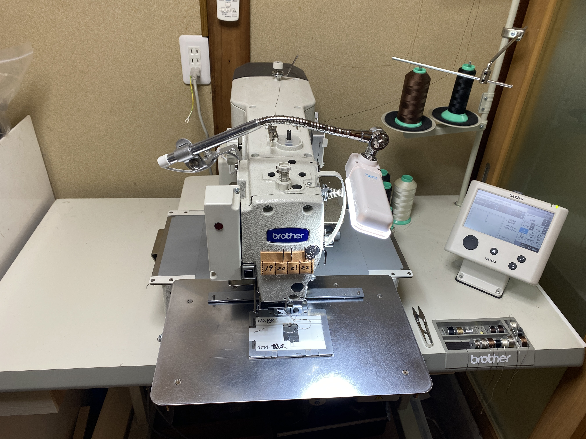

バッグの生産
「お客様の想いを形にする」という私たちの理念のもと、喜久野商店では、一つ一つのバッグに真心を込めて生産しています。

最新鋭のコンピューターミシンによる精密な縫製
長年の経験で培われた熟練の職人技と、最新鋭の**コンピューターミシン**を融合させることで、高品質かつ効率的な生産を実現しています。コンピューターミシンは、複雑なデザインや繊細なステッチも、驚くほどの**スピードと正確性**で再現可能にし、これにより生産性が飛躍的に向上。お客様の細部にわたるご要望にも、妥協なくお応えできる体制を整えています。
また、**レザー、ナイロン、帆布など多種多様な素材**に対応し、カジュアルなリュックサックからビジネスシーンに合うブリーフケースまで、幅広い種類のバッグの生産が可能です。**小ロットから大ロットまで柔軟に対応**いたしますので、お客様のブランドの規模やニーズに合わせて、最適な生産プランをご提案させていただきます。
お客様のアイデアを最高の品質で製品化するために、私たちは常に技術と品質の向上に努めています。ぜひ、貴社のバッグ生産を私たち喜久野商店にお任せください。